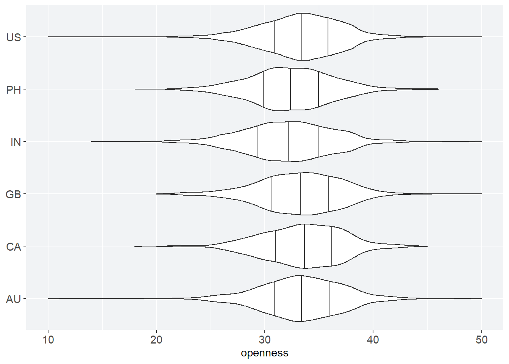
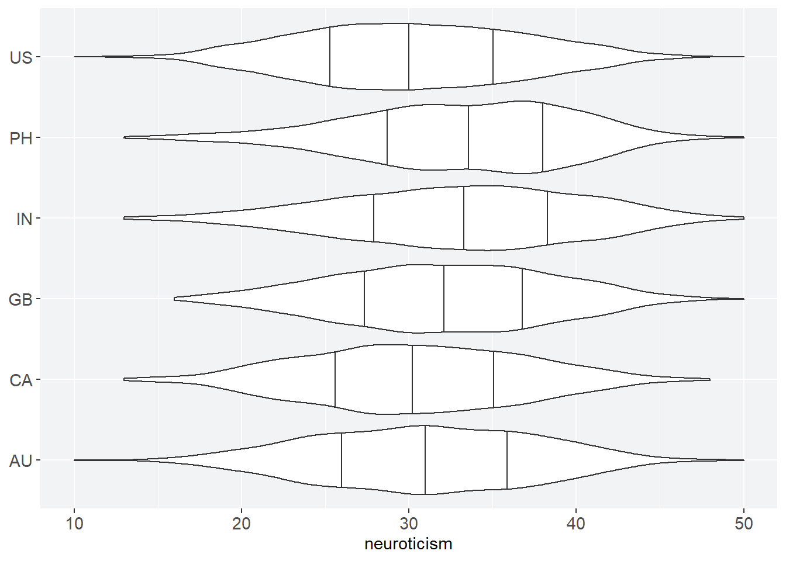
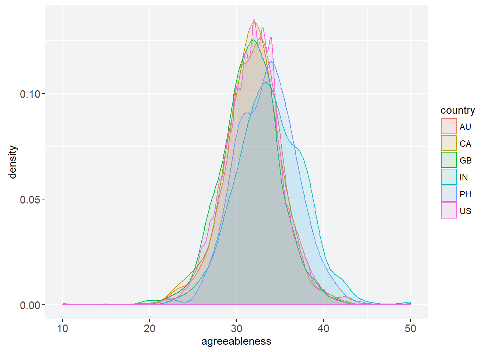

b5 <- read_tsv("b5.tsv",
show_col_types = FALSE)
go_away <- c("race", "age", "engnat", "gender", "hand", "source")
b5c <- b5 |> select(-any_of(go_away))animint2 GSOC Examination
Introduction
Hello! If you’re reading this, you’re probably Toby Dylan Hocking, Faizan Khan, or someone who’s applying to GSOC 2023. (And if you’re in the latter group, best of luck!)
Why am I applying to work on animint2? In my field of expertise—network psychometrics—an interactive model of depression led to the discovery of hysteresis in symptom networks. Later on, this became a crucial component of network theory.1 So I’ve become an enthusiast for interactive models and visualizations in science.
1 D. Borsboom. A network theory of mental disorders. World Psychiatry. 2017.
If I’m lucky, I hope to spend my summer improving animint2. I’m especially interested in writing and editing documentation. But I’m comfortable doing whatever has priority.
Of course, my super top secret reason for doing this is so I can maybe eventually publish a paper with Toby and bump my Erdős number down to a 4. But shhhh. That’s just between you and me.
Here’s my repository. It has my .qmd file, if you’d prefer to look at that or knit it yourself. Unless you also use the accompanying CSS file, there may be slight aesthetic differences between your rendered HTML file and this website.
Lastly, there’s been an explosion of AI tools this year. I hereby certify that I haven’t used them for any of my writing or code. In fact, I haven’t used them at all.
All right. Onto the tests.
Easy Test: Personalities By Country
The easy test asks us to do an exercise from the animint2 Manual. Or,
Even better: use animint2 to visualize some data from your domain of expertise.
So let’s take a look at some psychometrics.
Data Wrangling
Many psychological datasets have strict rules regarding their use. Luckily, The Open-Source Psychometrics Project has graced us with an abundance of personality data. I’ve elected to use the Big Five dataset. The dataset has data on participants’ age, race, and gender (among other things). But for the purposes of this test, I’ll limit myself to item responses by country and drop the other data:
The Big Five is otherwise known as the five-factor model of personality.
How many countries are there in this dataset, anyway? And what about the number of responses per country?
"(nu" is equivalent to NA.num_country <- b5c |> count(country, sort = TRUE) |>
filter(!(country == "(nu"))
num_country# A tibble: 157 × 2
country n
<chr> <int>
1 US 8753
2 GB 1531
3 IN 1463
4 AU 974
5 CA 924
6 PH 649
7 IT 277
8 MY 247
9 PK 222
10 DE 191
# … with 147 more rowsThat’s a lot of countries, and most of them have very few responses. Generalizability is affected if n is too small, so I’m going to somewhat arbitrarily keep the six countries with the largest sample sizes and drop the rest. Sorry, Italy.
six_countries <- b5c |> filter(country %in% c("US", "GB", "IN", "AU", "CA", "PH"))Lastly, the individual item responses aren’t especially useful to me. So I’m going to generate sumscores for each of the five personality factors and use that instead for the interactive visualization.
Individual items are useful for estimating psychometric networks. But as far as I can tell,
animint2 doesn’t support them.# add id column
plus_id <- rowid_to_column(six_countries, "id") |> rowwise(id)
# generate columns of sumscores
plus_sumscores <- plus_id |>
mutate(extraversion = sum(across(starts_with("E"))),
neuroticism = sum(across(starts_with("N"))),
agreeableness = sum(across(starts_with("A"))),
conscientiousness = sum(across(starts_with("C", ignore.case = FALSE))),
openness = sum(across(starts_with("O"))))
# remove individual items
sumscores <- plus_sumscores |> ungroup() |>
select(id, country, extraversion:openness)And now we have our final dataset:
sumscores# A tibble: 14,294 × 7
id country extraversion neuroticism agreeableness conscientiousn…¹ openn…²
<int> <chr> <dbl> <dbl> <dbl> <dbl> <dbl>
1 1 US 32 19 32 31 31
2 2 US 28 29 31 28 26
3 3 US 26 32 40 26 22
4 4 US 28 32 34 37 35
5 5 US 32 25 37 30 29
6 6 IN 35 19 31 30 30
7 7 US 31 37 33 35 37
8 8 US 29 33 27 32 33
9 9 IN 32 28 37 34 34
10 10 US 30 29 32 33 31
# … with 14,284 more rows, and abbreviated variable names ¹conscientiousness,
# ²opennessBig Five Data Viz
Now that our data are cleaned, let’s explore.
| Code | Country |
|---|---|
| AU | Australia |
| CA | Canada |
| GB | United Kingdom |
| IN | India |
| PH | Philippines |
| US | United States |
We have five personality traits and six countries. How do personality traits vary by country?
# limit redundancy
violinize <- list(geom_violin(
draw_quantiles = c(0.25, 0.5, 0.75)),
coord_flip(),
labs(x = NULL))oc <- sumscores |>
ggplot(mapping = aes(x = country,
y = openness))
oc + violinize
cc <- sumscores |>
ggplot(mapping = aes(x = country,
y = conscientiousness))
cc + violinize
ec <- sumscores |>
ggplot(mapping = aes(x = country,
y = extraversion))
ec + violinize
ac <- sumscores |>
ggplot(mapping = aes(x = country,
y = agreeableness))
ac + violinize
nc <- sumscores |>
ggplot(mapping = aes(x = country,
y = neuroticism))
nc + violinize
There’s some limited differences between personality factors. The distribution of scores for neuroticism is unusually wide, and openness seems to be slightly higher than the other personality factors. I’m not sure why. Maybe it’s an artifact of the kinds of people attracted to the website. Personality science isn’t my specialty in psychology—I can only speculate.
It’s also impressive how similar the scores are between countries. Their median scores do not seriously differ.
Here’s another look at at the similarities between test scores: a density plot for agreeableness. In this plot, we can see the literal overlap between the distribution of test scores. I’ll come back to the inter-country overlap later.
Agreeableness refers to phenomena like the tendency for compliance and altruism.
a_density <- sumscores |>
ggplot(mapping = aes(x = agreeableness,
color = country,
fill = country)) +
geom_density(alpha = 0.1)
a_density
Interacting with Personality
All right. Time for the most relevant part of the test: using animint() to showcase my data.
The factors in the five-factor model of personality are meant to be mostly independent from one another.2 That partly means we don’t expect the factors, when plotted against one another, to have any particularly strong relationships. In contrast, if we obtain a Pearson’s r close to 1 or −1, it may be the case that the two factors are actually one.
2 There are empirical and theoretical reasons to question this, but that’s outside the scope of the test. For further reading, see:
- D. Borsboom. The attack of the psychometricians. Psychometrika. 2006.
- D. van der Linden et al. The general factor of personality. J. Res. Pers. 2010.
What do the data show?
correlations <- sumscores |>
ggplot(mapping = aes(x = conscientiousness,
y = extraversion,
color = country))
corr <- correlations + geom_jitter(alpha = 0.25)
ani_corr <- animint(corr)
ani_corr$first <- list(country = "US")
ani_corrmapping: x = conscientiousness, y = extraversion, colour = country, showSelectedlegendcolour = country
geom_point: na.rm = FALSE
stat_identity: na.rm = FALSE
position_jitter
Here, extraversion is plotted against conscientiousness. The United States is the only country currently plotted. Clicking on other countries plots their data and shows that aforementioned overlap between countries. I’ve also made the data points semi-transparent so the data density is visible.
Extraversion refers to phenomena like outgoingness, while conscientiousness refers to phenomena like diligence.
I haven’t bothered to do any statistics. But at first glance, it seems like these data are consistent with the five-factor model. Outliers distort our hypothetical regression line and render \(r > 0\), but if we zoom in where the data are most dense, perhaps even that fluke of a pattern will fade.
Let’s see if that’s true.
corr_densed <- corr +
xlim(20, 40) +
ylim(20, 40)
ani_corr_zoom <- animint(corr_densed)
ani_corr_zoom$first <- list(country = "PH")
ani_corr_zoommapping: x = conscientiousness, y = extraversion, colour = country, showSelectedlegendcolour = country
geom_point: na.rm = FALSE
stat_identity: na.rm = FALSE
position_jitter
This time I’ve opted to show the Philippines, the country with the sparsest data. The data do seem to be pretty patternless. Furthermore, as you add more countries—or just the United States—the discrete nature of the data becomes visible even with jittered points. (The sumscores can only be integers.)
Of course, it’s immediately obvious without jitter. In the following heatmap, we can see both the discreteness and distribution of the data. However, generating the heatmap is not as straightforward as generating a scatterplot. First, we need to generate all combinations between the extraversion and conscientiousness factors. Then we need to count them:
Thanks to Toby Dylan Hocking for the suggestion to use a heatmap here!
combo_tbl <- sumscores |>
select(extraversion, conscientiousness) |>
expand_grid(.name_repair = "minimal")
von_count <- combo_tbl |>
group_by(across(extraversion:conscientiousness)) |>
count()Finally, we can generate our heatmap:
corr_discrete <- von_count |>
ggplot(mapping = aes(x = conscientiousness,
y = extraversion,
fill = n)) +
geom_tile() + coord_fixed()
corr_discrete
Pretty cool! Being able to explore and present this kind of research would be harder without the interactive benefits of animint2.
Sibling Rivalry
The second part of the easy test asks me to
Show an example of an error that you see when animint2 is loaded/attached at the same time as standard ggplot2.
There’s no conflict with just loading the packages:
library(animint2)
library(ggplot2)But R throws up an error message when you run code that uses syntax common to both. As a quick example, I’ll load up a toy dataset and try to generate a bar chart.
cat_pop <- read_csv("meow.csv",
show_col_types = FALSE)
cat_bar <- ggplot(data = cat_pop,
mapping = aes(cat_name, popularity)) +
geom_bar(stat = "identity", color = purple)
cat_barWhat happens?
Warning: Incompatible methods ("+.gganimint", "+.gg") for "+"In other words, animint2 and ggplot2 don’t get along because their syntaxes overlap. Unloading or uninstalling one or the other gets rid of the problem and finally gives us our very important kitty bar chart.

Medium Test: The Law of Large Numbers
There are multiple medium tests. The first one requires that the test-taker
translate an example of the animation package into an Animint.
So let’s look at the law of large numbers (LLN).
About the LLN
The law of large numbers, also called the weak law of large numbers, was named by S. D. Poisson in an article published in 1835.3 He wrote, emphasis his, that
3 Translated from French by I. Hacking, in Chapter 12 of The Taming of Chance. 1990.
Some sources cite Poisson’s 1837 book as the origin of the LLN’s name. Not quite. In his 1835 article, he mentions “la loi des grands nombres”—the law of large numbers.
Things of every kind are subject to a universal law that we may call the law of large numbers. It consists in this: if one observes a very considerable number of events of the same kind, depending on causes that vary irregularly, that is to say, without any systematic variation in one direction, then one finds that the ratios between the numbers of events are very nearly constant.
Though Poisson named it, the LLN has its origins in a posthumous publication by Jacob Bernoulli over a century earlier, and it has continued developing even up to the twentieth century.4 The exact details of the law have changed over the centuries. For our purposes, those details are largely irrelevant. (Also, I know my limits—there’s no way I can explain the LLN in a manner satisfactory to a mathematician.) Instead, we’ll be thinking of the LLN like this: given some population mean and some sample mean, the sample mean approaches the population mean as the sample size increases.
4 Some histories:
- M. Denker. Tercentennial anniversary of Bernoulli’s law of large numbers. Bull. Am. Math. Soc. 2013.
- E. Seneta. A Tricentenary history of the Law of Large Numbers. Bernoulli. 2013.
Importantly, that’s how the LLN animation demonstration interprets the LLN as well. I’ll construct my function with this understanding of the LLN in mind.
Function Construction
The lln.ani function has useful defaults for all its arguments. That’s a good goal to have—a user should be able to run the LLN function without any arguments and produce something useful to teach with.
Let’s call the animint2 LLN function fn_lln. To work, fn_lln requires
- The ability to read some set of data;
- The ability to generate the population mean for that data;
- The ability to continuously sample from the aforementioned data set and generate sample means, as well as a way to make it stop; and
- A plot that visually indicates the population mean, updates n as it increases, and graphs out the sample means.
Furthermore, though this isn’t necessary for the function to work, I want fn_lln to output messages that are useful for someone who’s unfamiliar with R. I’ll use the assertive package to do this instead of relying on base R’s functions, which sometimes outputs arcane error messages.
I could also write my own error messages, but I like
assertive’s, and code with my own error messages would be messier.The first requirement is straightforward. The dataset needs to take the form of a numeric vector that contains at least one number and no NAs. If a user tries to use something else, fn_lln should throw up an error. I’ll call the vector data_vector:
validity_check <- data_vector |>
assertive::assert_is_numeric() |>
assertive::is_non_empty() |>
assertive::assert_all_are_not_na()The second requirement is also straightforward. I can just calculate data_vector’s mean—by definition, it’s the population mean.
For self-evident reasons,
ani.lln calls it mu. As you can tell from my code, I prefer to trade brevity for extreme obviousness. Hence population_mean.population_mean <- data_vector |> mean()The third requirement is more complicated. I need to allow the user to decide on the sample size, as well as how often data_vector is sampled from. I need to take multiple samples, each one larger than the other, and calculate sample means from them. Then I need to place those calculations into a dataframe to use later on.
The sampling argument lets fn_lln know the maximum sample size, as well as how often data_vector should be sampled. A for loop does the sampling, and then sample_df stores both n and the sample means as a dataframe.
# create empty vector to put sample means into
sample_means <- vector(mode = "numeric",
length = sampling)
# random sampling and mean generation
for (i in seq_along(data_vector)) {
sample_means[i] <- data_vector |>
sample(size = i, replace = TRUE) |>
mean()
}
# generate n and a df to use for animint
sample_df <- sample_means |>
data.frame() |>
tibble::rowid_to_column(var = "n")The fourth requirement takes our population mean and sample means and constructs an animated plot that showcases the LLN.
# make lln plot
lln_plot <- sample_df |>
ggplot() +
aes(x = n, y = sample_df$sample_means) +
labs(y = "sample mean") +
geom_point(showSelected = "n", colour = "red") +
geom_line(alpha = 0.5) +
geom_hline(yintercept = population_mean,
colour = "red")
# animate lln plot
ani_lln_plot <- animint(lln_plot)
ani_lln_plot$time <- list(variable = "n", ms = 75)
ani_lln_plotAs mentioned, I also want useful defaults for fn_lln. Let’s have data_vector load a pseudo-random sample of six-sided dice by default.
d6 <- sample(x = 1:6, size = 500, replace = TRUE)The final function looks like this:
fn_lln <- function(data_vector = d6, sampling = 500){
# default data_vector
d6 <- sample(x = 1:6, size = 500, replace = TRUE)
# make sure dataset is a numeric vector
validity_check <- data_vector |>
assertive::assert_is_numeric() |>
assertive::is_non_empty() |>
assertive::assert_all_are_not_na()
# calculate population mean
population_mean <- data_vector |> mean()
# create empty vector to put sample means into
sample_means <- vector(mode = "numeric",
length = sampling)
# random sampling and mean generation
for (i in seq_along(data_vector)) {
sample_means[i] <- data_vector |>
sample(size = i, replace = TRUE) |>
mean()
}
# generate n and a df to use for animint
sample_df <- sample_means |>
data.frame() |>
tibble::rowid_to_column(var = "n")
# make lln plot
lln_plot <- sample_df |>
ggplot() +
aes(x = n, y = sample_df$sample_means) +
labs(y = "sample mean") +
geom_point(showSelected = "n", colour = "red") +
geom_line(alpha = 0.5) +
geom_hline(yintercept = population_mean,
colour = "red")
# animate lln plot
ani_lln_plot <- animint(lln_plot)
ani_lln_plot$time <- list(variable = "n", ms = 75)
ani_lln_plot
}fn_lln in Action
All right, here it is:
fn_lln()Note that